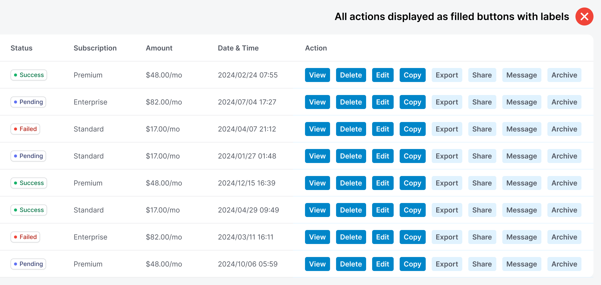

<!DOCTYPE html>
<html lang="en">
  <head>
    <meta charset="utf-8" />
    <meta name="viewport" content="width=device-width, initial-scale=1.0, maximum-scale=1.0, user-scalable=no" />

    <title></title>
    <link rel="stylesheet" href="dist/reveal.css" />
    <link rel="stylesheet" href="dist/theme/custom1.css" id="theme" />
    <link rel="stylesheet" href="plugin/highlight/atom-one-light.css" />
	<link rel="stylesheet" href="css/layout.css" />
	<link rel="stylesheet" href="plugin/customcontrols/style.css">
	<link rel="stylesheet" href="plugin/chalkboard/style.css">


    <script defer src="dist/fontawesome/all.min.js"></script>

	<script type="text/javascript">
		var forgetPop = true;
		function onPopState(event) {
			if(forgetPop){
				forgetPop = false;
			} else {
				parent.postMessage(event.target.location.href, "app://obsidian.md");
			}
        }
		window.onpopstate = onPopState;
		window.onmessage = event => {
			if(event.data == "reload"){
				window.document.location.reload();
			}
			forgetPop = true;
		}

		function fitElements(){
			const itemsToFit = document.getElementsByClassName('fitText');
			for (const item in itemsToFit) {
				if (Object.hasOwnProperty.call(itemsToFit, item)) {
					var element = itemsToFit[item];
					fitElement(element,1, 1000);
					element.classList.remove('fitText');
				}
			}
		}

		function fitElement(element, start, end){

			let size = (end + start) / 2;
			element.style.fontSize = `${size}px`;

			if(Math.abs(start - end) < 1){
				while(element.scrollHeight > element.offsetHeight){
					size--;
					element.style.fontSize = `${size}px`;
				}
				return;
			}

			if(element.scrollHeight > element.offsetHeight){
				fitElement(element, start, size);
			} else {
				fitElement(element, size, end);
			}		
		}


		document.onreadystatechange = () => {
			fitElements();
			if (document.readyState === 'complete') {
				if (window.location.href.indexOf("?export") != -1){
					parent.postMessage(event.target.location.href, "app://obsidian.md");
				}
				if (window.location.href.indexOf("print-pdf") != -1){
					let stateCheck = setInterval(() => {
						clearInterval(stateCheck);
						window.print();
					}, 250);
				}
			}
	};


        </script>
  </head>
  <body>
    <div class="reveal">
      <div class="slides"><section  data-markdown><script type="text/template"><!-- .slide: class="drop" -->
<div class="" style="position: absolute; left: 0px; top: 0px; height: 700px; width: 960px; min-height: 700px; display: flex; flex-direction: column; align-items: center; justify-content: center" absolute="true">

# Recap
</div></script></section><section  data-markdown><script type="text/template"><!-- .slide: class="drop" -->
<div class="" style="position: absolute; left: 0px; top: 0px; height: 700px; width: 960px; min-height: 700px; display: flex; flex-direction: column; align-items: center; justify-content: center" absolute="true">

### **Problem 1: Defining a Class**

**Goal:** Create a class to represent a `Circle`.

Fill in blanks A and B below so that the code compiles and runs.

```java
__A__ Circle {
    __B__ radius;
}

public class Main {
	public static void main(String[] args) {
		Circle c = new Circle();
		c.radius = 5.0;
		System.out.println(c.radius);
	}
}

```
</div></script></section><section  data-markdown><script type="text/template"><!-- .slide: class="drop" -->
<div class="" style="position: absolute; left: 0px; top: 0px; height: 700px; width: 960px; min-height: 700px; display: flex; flex-direction: column; align-items: center; justify-content: center" absolute="true">

### **Problem 2: Creating an Object**

**Goal:** Create an object of the `Circle` class.

Fill in the blanks to create a new `Circle` object named `myCircle`.

```java
class Circle {
    double radius;
}

public class Problem2 {
    public static void main(String[] args) {
        // Problem 2: Create a Circle object
        __A__ myCircle = __B__ Circle();
    }
}
```
</div></script></section><section  data-markdown><script type="text/template"><!-- .slide: class="drop" -->
<div class="" style="position: absolute; left: 0px; top: 0px; height: 700px; width: 960px; min-height: 700px; display: flex; flex-direction: column; align-items: center; justify-content: center" absolute="true">

### **Problem 3: Accessing and Assigning Data**

**Goal:** Set the `radius` of the `myCircle` object and print it.

Fill in the blanks to assign a value to the `radius` field and print it to the console.

```java
class Circle {
    double radius;
}

public class Problem3 {
    public static void main(String[] args) {
        Circle myCircle = new Circle();

        // Problem 3: Assign a value and print
        myCircle.__A__ = 10.0;
        System.out.println(myCircle.__B__);
    }
}
```
</div></script></section><section  data-markdown><script type="text/template"><!-- .slide: class="drop" -->
<div class="" style="position: absolute; left: 0px; top: 0px; height: 700px; width: 960px; min-height: 700px; display: flex; flex-direction: column; align-items: center; justify-content: center" absolute="true">

### **Problem 4: Class with Multiple Fields**

**Goal:** Define a class for a `Student` with multiple fields.

Complete the code to create a `Student` class with fields for `name` (a `String`) and `age` (an `int`).

```java
// Problem 4: Define the Student class

__A__ Student {
    __B__ name;
    __C__ age;
}

public class Problem4 {
    public static void main(String[] args) {
        Student s = new Student();
        s.name = "Alice";
        s.age = 20;
        System.out.println(s.name + " is " + s.age + " years old.");
    }
}
```
</div></script></section><section  data-markdown><script type="text/template"><!-- .slide: class="drop" -->
<div class="" style="position: absolute; left: 0px; top: 0px; height: 700px; width: 960px; min-height: 700px; display: flex; flex-direction: column; align-items: center; justify-content: center" absolute="true">

### **Problem 5: Multiple Objects of the Same Class**

**Goal:** Create and use two separate `Student` objects.

Fill in the blanks to create a second `Student` object, `s2`, and assign it different data.


```java
class Student {
    String name;
    int age;
}

public class Problem5 {
    public static void main(String[] args) {
        Student s1 = new Student();
        s1.name = "Alice";
        s1.age = 20;

        // Problem 5: Create a second object and assign values
        __A__ s2 = new __B__();
        s2.name = "Bob";
        s2.age = 22;

        System.out.println(s1.name + " vs. " + s2.name);
    }
}
```
</div></script></section><section  data-markdown><script type="text/template"><!-- .slide: class="drop" -->
<div class="" style="position: absolute; left: 0px; top: 0px; height: 700px; width: 960px; min-height: 700px; display: flex; flex-direction: column; align-items: center; justify-content: center" absolute="true">

### **Problem 6: Using Object Fields in Expressions**

**Goal:** Perform a calculation using object fields.

Complete the code to calculate and print the area of a `Rectangle` object.


```java
class Rectangle {
    int width;
    int height;
}

public class Problem6 {
    public static void main(String[] args) {
        Rectangle box = new Rectangle();
        box.width = 5;
        box.height = 8;

        // Problem 6: Calculate the area using fields
        int area = box.__A__ * box.__B__;
        System.out.println("The area is: " + area);
    }
}
```
</div></script></section><section  data-markdown><script type="text/template"><!-- .slide: class="drop" -->
<div class="" style="position: absolute; left: 0px; top: 0px; height: 700px; width: 960px; min-height: 700px; display: flex; flex-direction: column; align-items: center; justify-content: center" absolute="true">

### **Problem 7: Class with a Boolean Field**

**Goal:** Define and use a class with a `boolean` field.

Complete the code to create a `Lightbulb` class with a `boolean` field `isOn`. Then, create an object and set its state.

```java
// Problem 7: Define the Lightbulb class
class Lightbulb {
    boolean __A__;
}

public class Problem7 {
    public static void main(String[] args) {
        Lightbulb bulb = new Lightbulb();

        // Problem 7: Set the lightbulb to be on
        bulb.__B__ = __C__;

        System.out.println("Is the lightbulb on? " + bulb.isOn);
    }
}
```
</div></script></section><section  data-markdown><script type="text/template"><!-- .slide: class="drop" -->
<div class="" style="position: absolute; left: 0px; top: 0px; height: 700px; width: 960px; min-height: 700px; display: flex; flex-direction: column; align-items: center; justify-content: center" absolute="true">

### **Problem 8: What's in the Box?**

**Goal:** Understand that objects are independent.

Predict the output of the following program.

```java
class Box {
    double length;
}

public class Problem8 {
    public static void main(String[] args) {
        Box b1 = new Box();
        b1.length = 10.0;

        Box b2 = new Box();
        b2.length = 5.0;

        b1.length = 20.0;

        System.out.println(b1.length);
        System.out.println(b2.length);
    }
}
```
</div></script></section><section  data-markdown><script type="text/template"><!-- .slide: class="drop" -->
<div class="" style="position: absolute; left: 0px; top: 0px; height: 700px; width: 960px; min-height: 700px; display: flex; flex-direction: column; align-items: center; justify-content: center" absolute="true">

### **Problem 9: Class Containing Another Object**

**Goal:** Define a class that has a field that is another object.

Complete the code to create a `Car` class that has an `owner` field of type `Person`.

```java
class Person {
    String name;
}

// Problem 9: Define the Car class
class Car {
    String color;
    __A__ owner; // This field is an object!
}

public class Problem9 {
    public static void main(String[] args) {
        Car myCar = new Car();
        myCar.color = "Red";
        
        // You would need to create a Person object and assign it here.
        // For this problem, assume a Person object already exists.
    }
}
```
</div></script></section><section  data-markdown><script type="text/template"><!-- .slide: class="drop" -->
<div class="" style="position: absolute; left: 0px; top: 0px; height: 700px; width: 960px; min-height: 700px; display: flex; flex-direction: column; align-items: center; justify-content: center" absolute="true">

### **Problem 10: Accessing Nested Fields**

**Goal:** Use the dot operator to access a field inside a nested object.

Complete the code to print the name of the `Person` who owns the `Car`.

```java
class Person {
    String name;
}

class Car {
    String color;
    Person owner;
}

public class Problem10 {
    public static void main(String[] args) {
        Person p = new Person();
        p.name = "Jane";

        Car myCar = new Car();
        myCar.owner = p;

        // Problem 10: Print the owner's name
        System.out.println("The car's owner is: " + myCar.__A__.__B__);
    }
}
```
</div></script></section><section  data-markdown><script type="text/template"><!-- .slide: class="drop" -->
<div class="" style="position: absolute; left: 0px; top: 0px; height: 700px; width: 960px; min-height: 700px; display: flex; flex-direction: column; align-items: center; justify-content: center" absolute="true">

# Objects in Action: Instance Methods
</div></script></section><section  data-markdown><script type="text/template"><!-- .slide: class="drop" -->
<div class="" style="position: absolute; left: 0px; top: 0px; height: 700px; width: 960px; min-height: 700px; display: flex; flex-direction: column; align-items: center; justify-content: center" absolute="true">

## Welcome!

Today, we're going to make our objects _do things_.

Remember how we talked about classes and objects? A **class** is a blueprint, and an **object** is a specific instance of that blueprint.

Let's quickly recap with our table analogy.
</div></script></section><section  data-markdown><script type="text/template"><!-- .slide: class="drop" -->
<div class="" style="position: absolute; left: 0px; top: 0px; height: 700px; width: 960px; min-height: 700px; display: flex; flex-direction: column; align-items: center; justify-content: center" absolute="true">

## The Table Analogy, Revisited

Think of a **class** as a **table's structure**.

- The **fields** (like `name`, `age`, `gpa`) are the **column headers**. They define what information each entry will hold.
    
- An **object** is a **single row of data** in that table. Each row has values for all the columns.
    

For example, a `Student` class is like a table with `name` and `gpa` columns. An object named `jane` is a row in that table, with the values "Jane Doe" and 3.8.
</div></script></section><section  data-markdown><script type="text/template"><!-- .slide: class="drop" -->
<div class="" style="position: absolute; left: 0px; top: 0px; height: 700px; width: 960px; min-height: 700px; display: flex; flex-direction: column; align-items: center; justify-content: center" absolute="true">

## But What About Actions?

Our table of students is great for storing data, but what if we want to _do something_ with that data?

- What if we want to know if a student is on the honor roll?
- What if we want to calculate a student's GPA ?
- What we want to enroll student in a course?

This is where **instance methods** come in!
</div></script></section><section ><section data-markdown><script type="text/template"><!-- .slide: class="drop" -->
<div class="" style="position: absolute; left: 0px; top: 0px; height: 700px; width: 960px; min-height: 700px; display: flex; flex-direction: column; align-items: center; justify-content: center" absolute="true">

## Instance Methods as Buttons!

Let's add a new layer to our table analogy. Think of an instance method as a **button on a specific row** of our table.

Each row (object) has its own set of buttons. When you click a button on a specific row, it performs an action using only the data from _that specific row_ and *any arguments that you pass*.
</div></script></section><section data-markdown><script type="text/template"><!-- .slide: class="drop" -->
<div class="" style="position: absolute; left: 0px; top: 0px; height: 700px; width: 960px; min-height: 700px; display: flex; flex-direction: column; align-items: center; justify-content: center" absolute="true">

## Example




Image source: [UX Movement Newsletter](https://uxmovement.substack.com/p/how-to-fit-8-action-buttons-in-a)
</div></script></section></section><section  data-markdown><script type="text/template"><!-- .slide: class="drop" -->
<div class="" style="position: absolute; left: 0px; top: 0px; height: 700px; width: 960px; min-height: 700px; display: flex; flex-direction: column; align-items: center; justify-content: center" absolute="true">

## The Anatomy of an Instance Method

An instance method is a block of code that belongs to a class. It looks just like a `main` method, but without the `static` keyword.

```java
public returnType methodName(parameterList) {
    // Code to be executed
}
```

- **`public`**: We'll use this for now. It means the method can be used by other parts of your program.
    
- **`returnType`**: The type of data the method gives back (e.g., `int`, `String`, `double`). If it doesn't return anything, you'll use `void`.
    
- **`methodName`**: A name you choose for the action.
    
- **`parameterList`**: A list of variables the method needs to do its job.
</div></script></section><section  data-markdown><script type="text/template"><!-- .slide: class="drop" -->
<div class="" style="position: absolute; left: 0px; top: 0px; height: 700px; width: 960px; min-height: 700px; display: flex; flex-direction: column; align-items: center; justify-content: center" absolute="true">

## A Simple Example

Let's add a method to our `Student` class that gets a student's average score.

```java
public class Student {
    String name;
    double assignmentScore, quizScore, midtermScore, finalScore;

    // This is an instance method!
    public double getAverageScore() {
        return (assignmentScore + quizScore + midtermScore + finalScore)/4;
    }
}
```

This method is simple, but it's powerful because it belongs to each `Student` object.
</div></script></section><section  data-markdown><script type="text/template"><!-- .slide: class="drop" -->
<div class="" style="position: absolute; left: 0px; top: 0px; height: 700px; width: 960px; min-height: 700px; display: flex; flex-direction: column; align-items: center; justify-content: center" absolute="true">

## Calling Instance Methods

To use an instance method, you need an object!

The syntax is simple: `objectName.methodName(parameters);`

```java
public class Main {
    public static void main(String[] args) {
        Student jane = new Student();
        jane.name = "Jane Doe";
        jane.assignmentScore = 90;
        jane.quizScore = 70;
        jane.midtermScore = 80;
        jane.finalScore = 90;
        
        // Call the getAverageScore() method on the `jane` object
        double janeScore = jane.getAverageScore();
        System.out.println(jane.name + "'s average score is " + janeScore);
        
        // Let's create another student object
        Student john = new Student();
        john.name = "John Smith";
        john.assignmentScore = 100;
        john.quizScore = 70;
        john.midtermScore = 75;
        john.finalScore = 85;
        
        // Call getGpa() on the `john` object
        double johnScore = john.getAverageScore();
        System.out.println(john.name + "'s average score is " + johnScore);
    }
}
```
</div></script></section><section  data-markdown><script type="text/template"><!-- .slide: class="drop" -->
<div class="" style="position: absolute; left: 0px; top: 0px; height: 700px; width: 960px; min-height: 700px; display: flex; flex-direction: column; align-items: center; justify-content: center" absolute="true">

## Summary

- **Instance methods** are actions or behaviors that belong to a specific object.
    
- They operate on the **data of that object**.
    
- In our table analogy, they are the **buttons on each row**.
    
- The `this` keyword refers to the current object.
    
- You call an instance method using the syntax `objectName.methodName()`.
</div></script></section><section  data-markdown><script type="text/template"><!-- .slide: class="drop" -->
<div class="" style="position: absolute; left: 0px; top: 0px; height: 700px; width: 960px; min-height: 700px; display: flex; flex-direction: column; align-items: center; justify-content: center" absolute="true">

# Practice Problems: Instance Methods

**Instructions:** For each problem, create a Java class with the specified fields (member variables) and then add the required instance methods. Test your code by creating an object and calling the methods in a `main` method.

<u>[Write and run your code here.](https://onecompiler.com/java)</u>
</div></script></section><section  data-markdown><script type="text/template"><!-- .slide: class="drop" -->
<div class="" style="position: absolute; left: 0px; top: 0px; height: 700px; width: 960px; min-height: 700px; display: flex; flex-direction: column; align-items: center; justify-content: center" absolute="true">

### Problem 1: The `Dog` Class

Create a class called `Dog` with a single field: `String name`.

- Add an instance method called `bark()` that prints the dog's name followed by "barks loudly!". It should not return anything.
</div></script></section><section  data-markdown><script type="text/template"><!-- .slide: class="drop" -->
<div class="" style="position: absolute; left: 0px; top: 0px; height: 700px; width: 960px; min-height: 700px; display: flex; flex-direction: column; align-items: center; justify-content: center" absolute="true">

### Problem 2: The `Rectangle` Class

Create a class called `Rectangle` with two fields: `int width` and `int height`.

- Add an instance method called `calculateArea()` that returns the area of the rectangle. The method should return an `int`.
</div></script></section><section  data-markdown><script type="text/template"><!-- .slide: class="drop" -->
<div class="" style="position: absolute; left: 0px; top: 0px; height: 700px; width: 960px; min-height: 700px; display: flex; flex-direction: column; align-items: center; justify-content: center" absolute="true">

### Problem 3: The `Car` Class

Create a class called `Car` with a single field: `double mileage`.

- Add an instance method called `drive(double miles)` that takes a number of miles as a parameter. This method should add the miles to the car's `mileage` field. It should not return anything.
</div></script></section><section  data-markdown><script type="text/template"><!-- .slide: class="drop" -->
<div class="" style="position: absolute; left: 0px; top: 0px; height: 700px; width: 960px; min-height: 700px; display: flex; flex-direction: column; align-items: center; justify-content: center" absolute="true">

### Problem 4: The `BankAccount` Class

Create a class called `BankAccount` with a single field: `double balance`.

- Add two instance methods:
    
    1. `deposit(double amount)`: Adds the `amount` to the `balance`.
        
    2. `withdraw(double amount)`: Subtracts the `amount` from the `balance`.
</div></script></section><section  data-markdown><script type="text/template"><!-- .slide: class="drop" -->
<div class="" style="position: absolute; left: 0px; top: 0px; height: 700px; width: 960px; min-height: 700px; display: flex; flex-direction: column; align-items: center; justify-content: center" absolute="true">

### Problem 5: The `Person` Class

Create a class called `Person` with two fields: `String name` and `int age`.

- Add an instance method called `getAgeInTenYears()` that returns what the person's age will be in 10 years.
</div></script></section><section  data-markdown><script type="text/template"><!-- .slide: class="drop" -->
<div class="" style="position: absolute; left: 0px; top: 0px; height: 700px; width: 960px; min-height: 700px; display: flex; flex-direction: column; align-items: center; justify-content: center" absolute="true">

### Problem 6: The `Book` Class

Create a class called `Book` with fields for `String title` and `String author`.

- Add an instance method called `displayInfo()` that prints the book's title and author in a single sentence. It should not return anything.
</div></script></section><section  data-markdown><script type="text/template"><!-- .slide: class="drop" -->
<div class="" style="position: absolute; left: 0px; top: 0px; height: 700px; width: 960px; min-height: 700px; display: flex; flex-direction: column; align-items: center; justify-content: center" absolute="true">

### Problem 7: The `Counter` Class

Create a class called `Counter` with a single field: `int value`.

- Add two instance methods:
    
    1. `increment()`: Adds 1 to the `value`.
        
    2. `getValue()`: Returns the current `value`.
</div></script></section><section  data-markdown><script type="text/template"><!-- .slide: class="drop" -->
<div class="" style="position: absolute; left: 0px; top: 0px; height: 700px; width: 960px; min-height: 700px; display: flex; flex-direction: column; align-items: center; justify-content: center" absolute="true">

### Problem 8: The `TemperatureConverter` Class

Create a class called `TemperatureConverter` with a single field: `double celsius`.

- Add an instance method called `toFahrenheit()` that returns the temperature converted to Fahrenheit. The formula is: `(celsius * 9/5) + 32`.
</div></script></section><section  data-markdown><script type="text/template"><!-- .slide: class="drop" -->
<div class="" style="position: absolute; left: 0px; top: 0px; height: 700px; width: 960px; min-height: 700px; display: flex; flex-direction: column; align-items: center; justify-content: center" absolute="true">

### Problem 9: The `Point` Class

Create a class called `Point` with two fields: `int x` and `int y`.

- Add an instance method called `move(int xChange, int yChange)` that updates the point's `x` and `y` fields by adding the change amounts.
</div></script></section><section  data-markdown><script type="text/template"><!-- .slide: class="drop" -->
<div class="" style="position: absolute; left: 0px; top: 0px; height: 700px; width: 960px; min-height: 700px; display: flex; flex-direction: column; align-items: center; justify-content: center" absolute="true">

### Problem 10: The `Circle` Class

Create a class called `Circle` with a single field: `double radius`.

- Add an instance method called `calculateCircumference()` that returns the circumference of the circle. Use `Math.PI` for the value of pi.
</div></script></section></div>
    </div>

    <script src="dist/reveal.js"></script>

    <script src="plugin/markdown/markdown.js"></script>
    <script src="plugin/highlight/highlight.js"></script>
    <script src="plugin/zoom/zoom.js"></script>
    <script src="plugin/notes/notes.js"></script>
    <script src="plugin/math/math.js"></script>
	<script src="plugin/mermaid/mermaid.js"></script>
	<script src="plugin/chart/chart.min.js"></script>
	<script src="plugin/chart/plugin.js"></script>
	<script src="plugin/menu/menu.js"></script>
	<script src="plugin/customcontrols/plugin.js"></script>
	<script src="plugin/chalkboard/plugin.js"></script>

    <script>
      function extend() {
        var target = {};
        for (var i = 0; i < arguments.length; i++) {
          var source = arguments[i];
          for (var key in source) {
            if (source.hasOwnProperty(key)) {
              target[key] = source[key];
            }
          }
        }
        return target;
      }

	  function isLight(color) {
		let hex = color.replace('#', '');

		// convert #fff => #ffffff
		if(hex.length == 3){
			hex = `${hex[0]}${hex[0]}${hex[1]}${hex[1]}${hex[2]}${hex[2]}`;
		}

		const c_r = parseInt(hex.substr(0, 2), 16);
		const c_g = parseInt(hex.substr(2, 2), 16);
		const c_b = parseInt(hex.substr(4, 2), 16);
		const brightness = ((c_r * 299) + (c_g * 587) + (c_b * 114)) / 1000;
		return brightness > 155;
	}

	var bgColor = getComputedStyle(document.documentElement).getPropertyValue('--r-background-color').trim();
	var isLight = isLight(bgColor);

	if(isLight){
		document.body.classList.add('has-light-background');
	} else {
		document.body.classList.add('has-dark-background');
	}

      // default options to init reveal.js
      var defaultOptions = {
        controls: true,
        progress: true,
        history: true,
        center: true,
        transition: 'default', // none/fade/slide/convex/concave/zoom
        plugins: [
          RevealMarkdown,
          RevealHighlight,
          RevealZoom,
          RevealNotes,
          RevealMath.MathJax3,
		  RevealMermaid,
		  RevealChart,
		  RevealCustomControls,
		  RevealMenu,
		  RevealChalkboard, 
        ],


    	allottedTime: 120 * 1000,

		mathjax3: {
			mathjax: 'plugin/math/mathjax/tex-mml-chtml.js',
		},
		markdown: {
		  gfm: true,
		  mangle: true,
		  pedantic: false,
		  smartLists: false,
		  smartypants: false,
		},

		mermaid: {
			theme: isLight ? 'default' : 'dark',
		},

		customcontrols: {
			controls: [
				{id: 'toggle-overview',
				title: 'Toggle overview (O)',
				icon: '<i class="fa fa-th"></i>',
				action: 'Reveal.toggleOverview();'
				},
				{ icon: '<i class="fa fa-pen-square"></i>',
				title: 'Toggle chalkboard (B)',
				action: 'RevealChalkboard.toggleChalkboard();'
				},
				{ icon: '<i class="fa fa-pen"></i>',
				title: 'Toggle notes canvas (C)',
				action: 'RevealChalkboard.toggleNotesCanvas();'
				},
			]
		},
		menu: {
			loadIcons: false
		}
      };

      // options from URL query string
      var queryOptions = Reveal().getQueryHash() || {};

      var options = extend(defaultOptions, {"width":960,"height":700,"margin":0.04,"controls":true,"progress":true,"slideNumber":false,"transition":"slide","transitionSpeed":"default"}, queryOptions);
    </script>

    <script>
      Reveal.initialize(options);
    </script>
  </body>

  <!-- created with Advanced Slides -->
</html>
